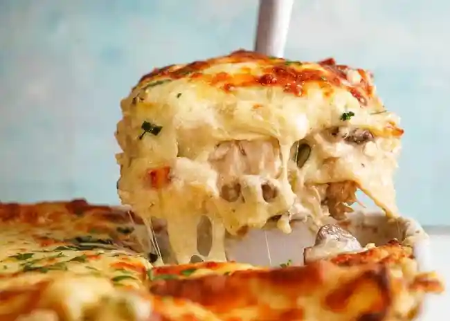

White Chicken Lasagne

Description
This lasagne recipie will change the way you think about lasagne forever! I know what you are going to say, that lasange should be made with a rich tomatoey beef mince filling but trust me you will be coverted once you taste the tender chicken and mushroom filled white sauce filling. And if there are left overs dont worry because it will taste even better the next day.
Ingredients
- 500g chicken tenderloins
- 2 cups chicken broth
- 2 bay leaves
- 1 tsp thyme (dried)
- 2 tsp chicken stock powder
- 80g butter
- 2 tbsp olive oil
- 4 cups of milk
- 200g button mushrooms
- 4 galic cloves (or 2 tsp minced garlic)
- 3/4 cup plain flour
- 3 cups shredded italian cheese blend
- Fresh lasange pasta sheets
- Salt & pepper to taste
Method
- Chicken & stock: Combine the chicken, milk, chicken stock, bay leaves and thyme into a low saucepan. Simmer (do not boil) for 15 mins or untill chicken cooked with lid on. Femove chicken and shread and set the liquid and chicken aside.
- Mushrooms: Cook mushrooms on high heat with olive oil, 2 cloves of garlic (minced), 30g of butter and salt an pepper to tast until golden. Then turn off heat and set aside.
- Sauce: Melt remaining butter in a large skillet over medium heat. Saute remaing garlic for 30 sec then stir in flour for 1 min. Gradualy pour in 2 cups of reserved chicken cooking liquid while stiring constantly. Continue adding 3 more cups of liquid while stiring until the mixture thickens, you can use a whisk if nessasary to remove any lumps.Remove from heat and add half the cheese. Taste and add salt and pepper as desired.
- Set aside 2 cups of sauce for topping. stir chicken amd mushrooms into the remaining sauce.
- Preheat oven to 180C/350F.
- Lasagne: place a thin layer of sauce that was set aside on to the bottom of a 25 x 25 cm baking dish. Cover with one layer of pasta then add half the chicken mixture. Place another layer of pasta then add the remaining chicken mixture. Place one last layer of pasta and add a layer of sauce then add remaing cheese evenly.
- Cover with aluminium foil and place in preheated oven for 25min. Remove foil and bake for further 10 mins or until cheese is golden brown.
- Stand for 10 mins, cut to size and serve.
Home